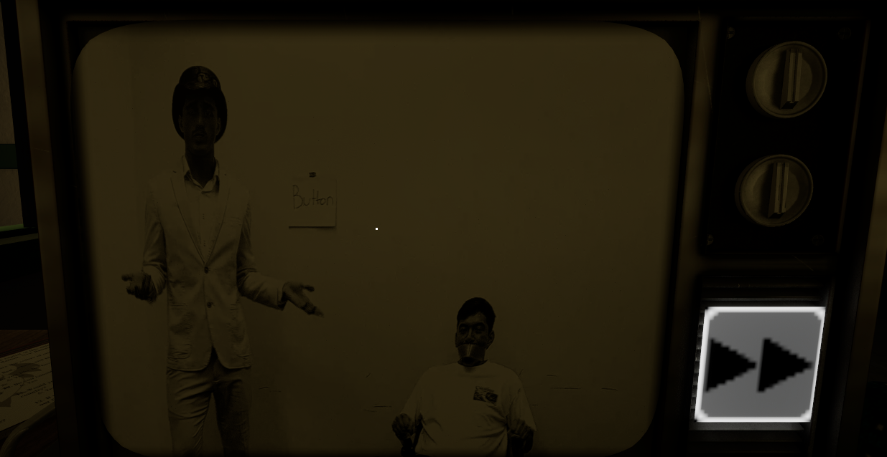
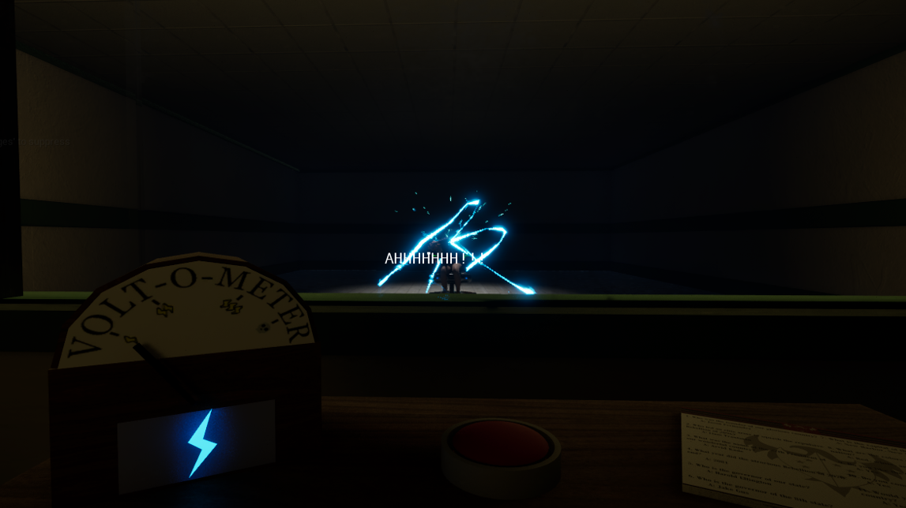
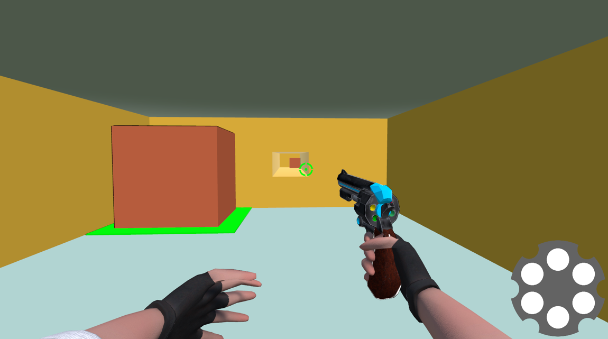
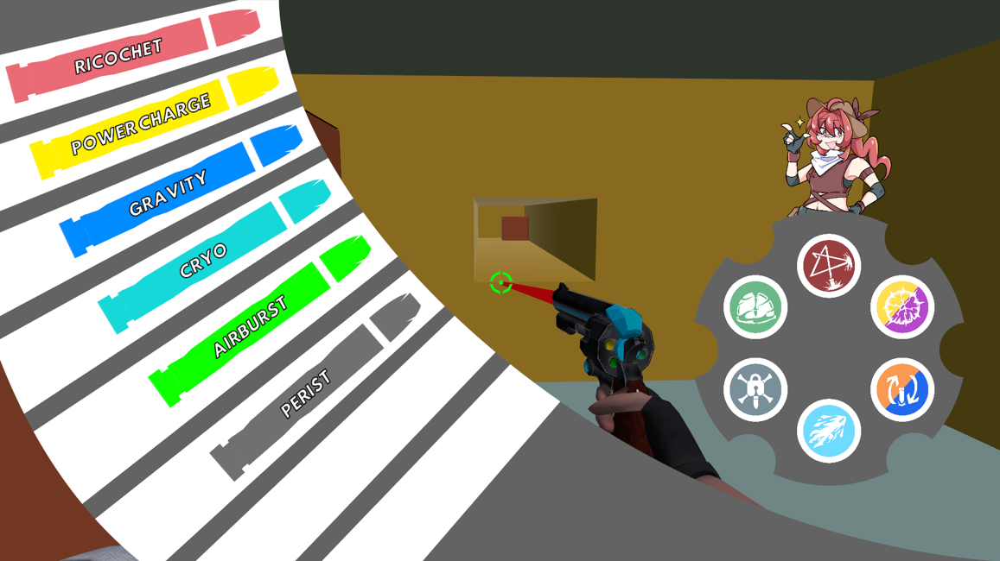
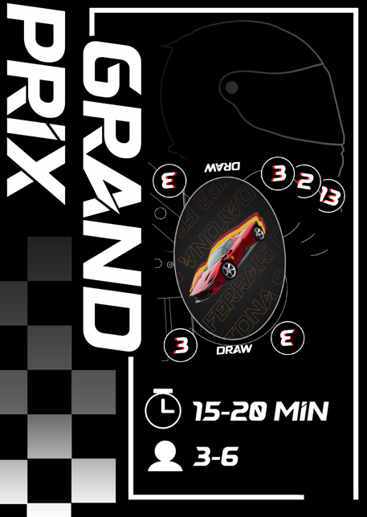
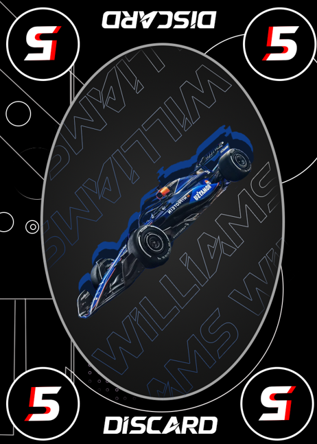
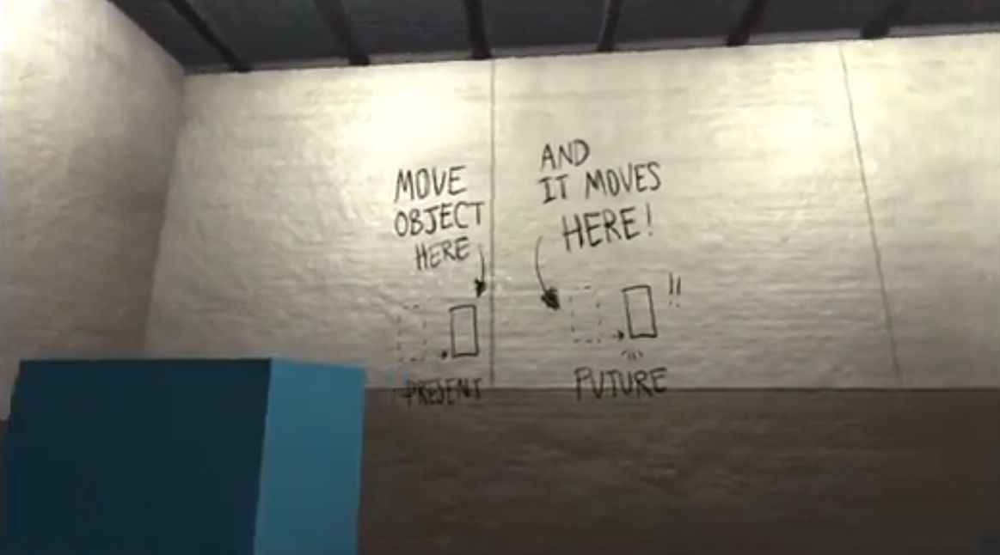
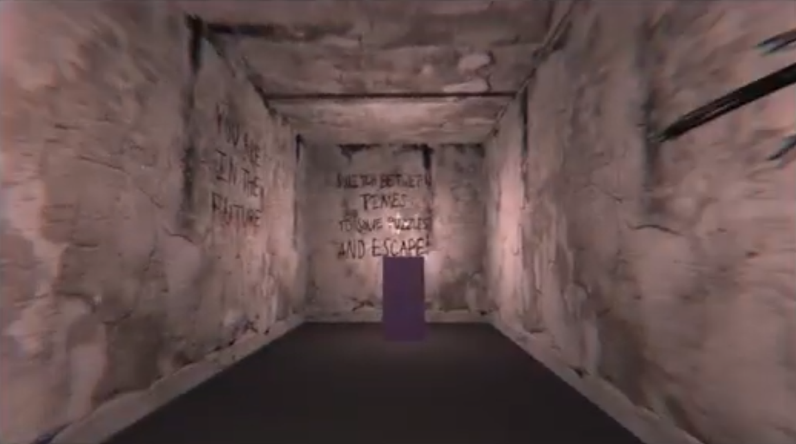
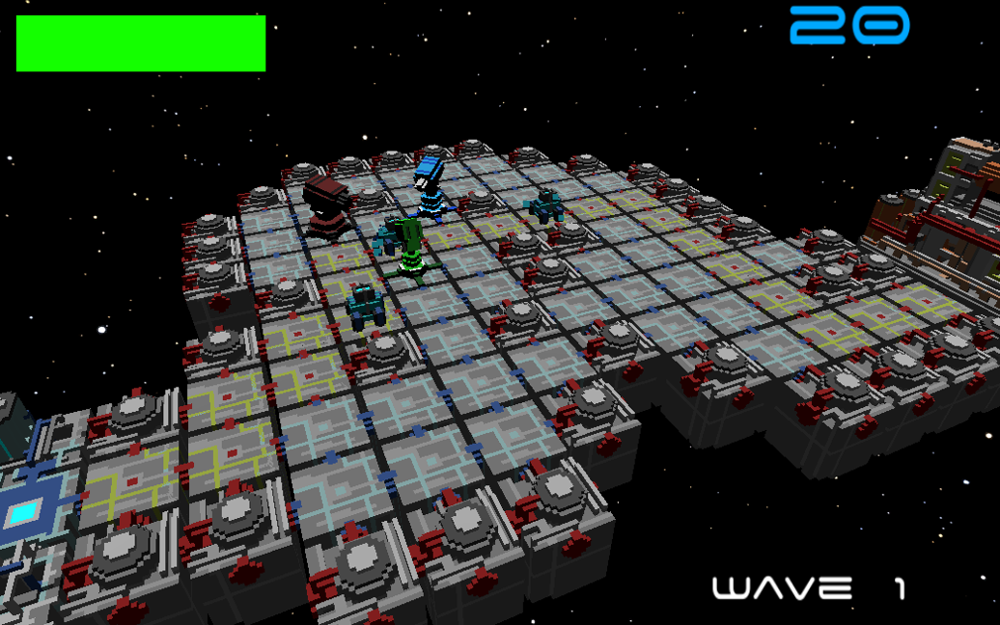
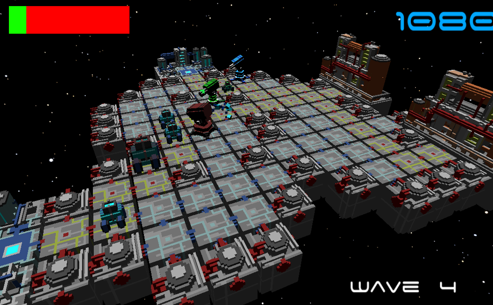

About Me
Hello, I am Jake Preston, a fourth-year student currently studying Immersive Media and Games at Northern Arizona University. I’m a Gameplay and Systems Designer passionate in creating experiences that elicit intense emotions from players. I have been working as both the lead designer and team lead for many of my most recent projects which has given me a lot of experience managing a team and ensuring productivity. I am also a D1 track and field athlete and just recently transferred from the University of California, Irvine to continue my academic and athletic careers.
Skills and Experience
- Gameplay
- Systems
- Level
- HTML/CSS
- C++/C#
- Java
- Python
- Leadership
- Creativity
- Cooperation
Projects Reference
The Milgram Experiment pushes the boundaries on what a game can be. It puts the player through the famous Milgram Experiment and tests how they would react in the face of pleading and helpless citizens. Players take the role of a Patriot Test administrator in a fictional country. NPCs come in and take the test, with the player being instructed to “administer a motivational stimulus” in response to any incorrect answers. The player must decide whether they will submit to authority and cruelly execute innocent civilians, or rebel and potentially save lives.
 
Gunslinger Breakout is an unfinished 3D FPS puzzle game where the player must use a revolver full of bullets with special abilities in order to solve puzzles. The player finds themselves in an abandoned facility and must solve increasingly complex puzzles in order to escape.
 
Grand Prix is a fast-paced strategic card game where players need to strike at the perfect moment to secure the victory. Players must use their cards to beat everyone in consecutive 1v1 races, spending resources they have gained strategically to ensure victory.
 
Time shift is a 3D first person puzzle game where the player must travel through time in order to solve puzzles and escape the facility! This game was created as a part of a group project at my previous University, UC Irvine. In this game the player has the ability to travel through time to the future and back to the present.
 
Spacial Defense is a 2.5D Tower Defense game where the player must manage 3 towers with different abilities to prevent waves of enemies from reaching their base. Move towers alongside the enemies in order to beat waves. After certain score milestones players can upgrade their towers.
 
Education and Experience
| School | Degree | Duration |
|---|---|---|
| UC Irvine | Game Design and Interactive Media | 3 Years |
| Northern Arizona University | Immersive Media and Games | 1 Semester |